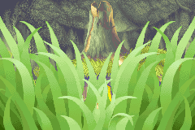

Shrek - Reekin' Havoc (Europe) (En,Fr,De,Es,It,Nl)
EEPROM 4K
Cartridge Identity
- Game Code
AOIP(FamilyAOI)- Header Title
SHREK REEKIN- Maker / Revision
6S/ rev0- ROM Size
- 8.0 MiB (8,388,608 B)
- Save Media
EEPROM 4K- SHA-256
028c7422fc9fd679dc341054b987b948c20a3472bcb75ba27c66d9afad4a024a
Screenshots


Observed Battery Save Layout
- Fill Byte & Active Size
0x00fill · 147–512 / 512 B active (entropy 1.04 bits/B)- Active Offset Ranges
0x0–0x1FF(1 total)- ASCII Magic / Headers
002S- Observed Variable Regions
- 377 bytes across 9 spans:
0x1–0xF,0x11–0x57,0x59–0x67,0x69–0xAF,0xB1–0xBF,0xC1–0x107,0x109–0x10F,0x118–0x14F, +1 more - Candidate Checksum/Counter Spans
- None
Regional Variants & Revisions (Family AOI)
- Shrek - Reekin' Havoc (USA) (En,Fr,De,Es,It,Nl) (
AOIE, 8 MiB)